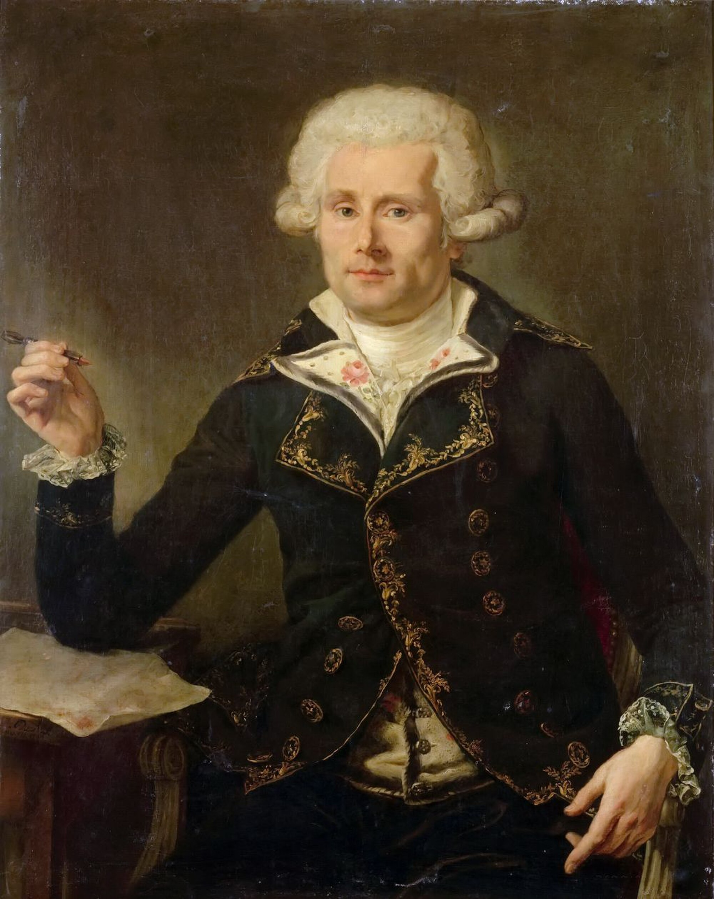

סר לואי דה בוגנוויל

לחץ על התמונה להגדלה
Louis Antoine de Bougainville | Source: Wikimedia Commons | License: Public Domain
מקור ומשמעות השם המלא (אטימולוגיה מורחבת)
שם פרטי: לואי אנטואן (Louis Antoine)
השם מורכב משני שמות צרפתיים קלאסיים בעלי מטען היסטורי עמוק המייצגים את האצולה והכוח.
לואי (Louis): השם נגזר מהשם הגרמאני העתיק Chlodovech (לודוויג או קלוביס), שפירושו המילולי הוא "לוחם מהולל" או "מפורסם בקרב". זהו השם המלכותי ביותר בהיסטוריה של צרפת, שבו נשאו 18 מלכים. עבור בוגנוויל, שהתחיל את דרכו כקצין צבא מבריק בשדה הקרב, השם ביטא את ייעודו המקורי כלוחם למען הממלכה.
אנטואן (Antoine): השם נגזר מהשם הלטיני Antonius (אנטוניוס). משמעותו היא "יקר מציאות", "ראוי לשבח" או "בלתי יסולא בפז". השילוב של שני השמות – הלוחם המהולל שהוא גם יקר ערך – שיקף את מעמדו של בוגנוויל כבן למשפחה בורגנית-גבוהה בפריז, השואפת להטביע חותם של איכות ויוקרה בחצר המלכות ובמדע.
שם משפחה: דה בוגנוויל (de Bougainville)
זהו שם משפחה צרפתי טופונימי (הנגזר משם של מקום גיאוגרפי). הקידומת "דה" (de) היא תווית אצולה המעידה על בעלות על אדמות או מוצא ממשפחת בעלי נכסים.
מקור בלשני: השם נגזר משמו של הכפר Bougainville באזור סום שבחבל נורמנדי (צפון צרפת). השם מורכב מהמילה "Ville" (עיר, חווה או אחוזה) ומשם פרטי גרמאני קדום כמו Bodo.
הבוגנוויליה (Bougainvillea) - ההנצחה הבוטנית: שמו של בוגנוויל זכה לחיי נצח בכל גינה בעולם בזכות מחווה מדעית מרגשת. הבוטנאי של המשלחת שלו, פיליבר קומרסון, גילה במהלך עצירה בריו דה ז'ניירו שבברזיל (1767) צמח מטפס טרופי יפהפה עם עלים צבעוניים בוהקים. קומרסון, שהיה אסיר תודה למפקדו על התנאים המעולים שסיפק למחקר, קרא לצמח על שמו – בוגנוויליה. מעניין לציין שמי שסייעה באיסוף הדגימות הייתה אהובתו של קומרסון, ז'אן בארה, שהתחפשה לגבר כדי להצטרף למסע.
ילדות ורקע מוקדם: הגאון המתמטי של עידן הנאורות
לואי אנטואן דה בוגנוויל נולד בפריז ב-12 בנובמבר 1729, בלב תקופה של פריחה אינטלקטואלית הידועה כ"עידן הנאורות". הוא נולד למשפחה משכילה ומבוססת היטב; אביו היה נוטריון בכיר וחבר במועצת העיר פריז, מה שאפשר ללואי לקבל את החינוך הטוב ביותר שצרפת יכלה להציע.
מתמטיקאי לפני יורד ים
בניגוד לרוב מגלי הארצות הגדולים, בוגנוויל לא נולד אל תוך הים. הוא התחיל את חייו הבוגרים כאינטלקטואל ומדען. הוא גילה כישרון יוצא דופן למתמטיקה ולמד אצל גדולי הדור, ביניהם ז'אן לה רון ד'אלמבר. בשנת 1754, בהיותו בן 25 בלבד, הוא פרסם חיבור אקדמי מונומנטלי על חשבון אינטגרלי (Traité du calcul intégral). הספר זכה להצלחה בינלאומית מדהימה והקנה לו תהילה כמתמטיקאי מבריק, ואף הביא לקבלתו היוקרתית כחבר ב"חברה המלכותית" (Royal Society) של לונדון – הישג נדיר לצרפתי באותה תקופה.המעבר לצבא וגבורה בקנדה
למרות ייעודו האקדמי, בוגנוויל נמשך לאקשן ולשירות האומה. הוא התגייס ליחידת העילית "חיל המוסקטרים" והפך לקצין. בשנת 1756, עם פרוץ "מלחמת שבע השנים", הוא נשלח לקנדה (צרפת החדשה) כעוזרו האישי והבכיר (Aide-de-camp) של המפקד הצרפתי המהולל, המרקיז דה מונקאלם. בוגנוויל הוכיח את עצמו כקצין אמיץ בצורה יוצאת דופן; הוא נפצע בקרבות, הפגין יכולות לוגיסטיות מרשימות ולקח חלק פעיל בניסיונות הנואשים להגן על קוויבק (שנוסדה ע"י דה שמפלן) מפני הבריטים. עם נפילת העיר וכישלון הצרפתים, הוא חזר לצרפת ב-1763 עם ידע צבאי ומוטיבציה אדירה לשקם את כבוד האומה.הדרך לארמון: החיבור למלך לואי ה-15 והבחירה הגורלית
כיצד הגיע בוגנוויל לפגישה עם המלך?
בוגנוויל לא היה זר לחצר המלכות. מעמדו כמתמטיקאי מפורסם מצד אחד, וגיבור מלחמה שחזר מהחזית בקנדה מצד שני, הפכו אותו לדמות מסקרנת בפריז. המפתח העיקרי לחדרו הפרטי של המלך היה הדוכס דה שואזול (Choiseul), השר החזק והמשפיע ביותר של לואי ה-15. שואזול, שחיפש דרכים להחזיר לצרפת את יוקרתה לאחר התבוסה המשפילה לבריטים, התרשם עמוקות מהדוחות האסטרטגיים שהגיש בוגנוויל. השילוב הנדיר של שכל מתמטי חריף, ניסיון קרבי ונימוסי חצר פריזאיים הוא שאפשר לבוגנוויל להציג את תוכניותיו הנועזות ישירות למלך.
מדוע בחר המלך דווקא בבוגנוויל למסע סביב העולם?
בחירת המלך בבוגנוויל להוביל את משלחת הקפת העולם הצרפתית הראשונה נבעה משלושה שיקולים אסטרטגיים:
1. המומחיות המדעית: בוגנוויל היה מתמטיקאי שידע לפתור את האתגר של חישוב קווי אורך (Longitude) בלב ים – הבעיה המדעית הקשה ביותר של המאה ה-18. המלך רצה שהמשלחת תהיה הוכחה לעליונות המדעית של צרפת.
2. הכישרון הדיפלומטי: המשימה הייתה רגישה מבחינה פוליטית. היא כללה משא ומתן עדין עם ספרד בנוגע לאיי פוקלנד ופוטנציאל למפגש עם תרבויות חדשות באוקיינוס השקט. בוגנוויל, כאדם משכיל ורהוט, נחשב לשגריר המושלם.
3. המודל הכלכלי (הצעה שאי אפשר לסרב לה): בוגנוויל הציע מודל מימון חדשני; הוא הציע לממן חלק נכבד מהשלבים הראשונים של המשלחת (כולל הקמת המושבה בפוקלנד) מכספו הפרטי ומכספי משקיעים שגייס. בתקופה שבה קופת הממלכה הייתה ריקה לאחר המלחמה, הצעה זו הכריעה את הכף לטובתו.
פרשת איי פוקלנד: המושבה הצרפתית הראשונה
בוגנוויל היה למעשה המייסד של ההתיישבות האנושית הראשונה באיי פוקלנד! בשנת 1764, הוא הקים מושבה בפורט לואי שבאיי פוקלנד המזרחיים וקרא להם איי מלוּאִין (Îles Malouines), על שם עיר הנמל הצרפתית סן-מלו ממנה יצאו מתיישביו.
העימות עם ספרד: ספרד ראתה באיים חלק מהטריטוריה שלה ודרשה את פינויים המיידי. כדי למנוע מלחמה עם בת-בריתה ספרד, המלך לואי ה-15 הורה לבוגנוויל למסור את האיים לספרדים. בוגנוויל הסכים, אך הפגין גאונות פוליטית: הוא הציב תנאי לפיו משימת המסירה של האיים תהיה רק התחנה הראשונה בדרך למסע אדיר להקפת העולם במימון המלך. המלך הסכים, וכך איי פוקלנד הפכו ל"תירוץ" שהניע את המסע הגדול ביותר של צרפת באותה מאה. השם הספרדי של האיים עד היום, איי מלווינס (Malvinas), הוא שיבוש ישיר של השם שהעניק להם בוגנוויל.
אידאולוגיה: המדע ו"הפרא האציל"
בוגנוויל ייצג את תפיסת העולם של "עידן הנאורות" הצרפתי. המניע שלו לא היה דתי או שוד זהב, אלא חיפוש אחר ידע ושיפור האנושות.
מסע הקפת העולם (1766-1769): הסודות שעל הסיפון
בוגנוויל קיבל מהמלך פיקוד על שתי ספינות: הפריגטה "הזועפת" (La Boudeuse) וספינת האספקה "הכוכב" (L'Étoile). המשלחת יצאה מנאנט בדצמבר 1766 למסע שיימשך שנתיים וחצי וישנה את פני המדע והתרבות באירופה.
1. ז'אן בארה: האישה הראשונה שהקיפה את העולם
אחד הסיפורים המדהימים ביותר בתולדות גילוי ארצות התרחש בספינה "הכוכב". הבוטנאי של המשלחת, פיליבר קומרסון, הביא עמו "עוזר אישי" צעיר ושתקן בשם ז'אן בארה. למעשה, הייתה זו ז'אן בארה (Jeanne Baret), מומחית לצמחים ואהובתו של קומרסון, שהתחפשה לגבר (שכן חוקי הצי הצרפתי אסרו בהחלט על נשים לעלות לספינות).
היא ביצעה עבודה פיזית מפרכת, סחבה ציוד כבד ביערות ברזיל וטהיטי, וסייעה לאסוף אלפי דגימות בוטניות (כולל גילוי הבוגנוויליה). סודה נחשף רק בטהיטי, כאשר הילידים זיהו מיד את מינה. ז'אן בארה עשתה היסטוריה כאישה הראשונה אי פעם שהקיפה את כדור הארץ, והיא נחשבת כיום לחלוצה מדעית ופמיניסטית.
2. גן העדן הפולינזי: ההגעה לטהיטי (אפריל 1768)
הגעת המשלחת לאי טהיטי הייתה רגע מכונן. בוגנוויל, שלא ידע שהבריטים הגיעו לשם חודשים ספורים לפניו, נדהם ממה שראה. הוא התקבל על ידי הילידים בפרחים, בשירה ובחופש מיני מוחלט שהיה בלתי נתפס בעיניים אירופאיות.
בוגנוויל קרא לאי "קיתרה החדשה" (Nouvelle Cythère), על שם האי היווני המיתולוגי של אפרודיטה. הוא ראה בטהיטי את האישור החי לאידיאולוגיה של רוסו – מקום שבו האדם חי בטוב ובאושר ללא הכבלים המוסריים והדתיים של אירופה. התיאורים שלו בספר שפרסם לאחר מכן יצרו את מיתוס "גן העדן הפולינזי" שקיים בתרבות המערבית עד היום.
3. השונית הגדולה והצלחה רפואית
לאחר טהיטי, בוגנוויל הפליג מערבה והיה קרוב מאוד לגלות את אוסטרליה, אך הוא נהדף על ידי שונית המחסום הגדולה. הוא גילה את מצר בוגנוויל (ליד איי שלמה) וחזר לצרפת במרץ 1769. המשלחת הייתה הצלחה רפואית מדהימה: בזכות ניהול היגייני קפדני ותזונה משופרת, בוגנוויל איבד רק 7 אנשים מתוך מעל 300 אנשי צוות – נתון חסר תקדים בתקופה שבה רוב המלחים מתו מצפדינה.
מורשת: בין הבוטניקה לפילוסופיה
1. הספר שזעזע את אירופה
בשנת 1771 פרסם בוגנוויל את "מסע סביב העולם" (Voyage autour du monde). הספר הפך לרב-מכר עולמי מיידי. תיאוריו את טהיטי כחברה אידיאלית שוחרת שלום ואהבה חופשית שימשו את הוגי הנאורות (כמו דידרו) כדי לתקוף את הצביעות של החברה האירופאית ומוסדות הכנסייה. בוגנוויל למעשה "המציא" את מושג האקזוטיות המודרנית.
2. תרומה מדעית עולמית
בוגנוויל השאיר אחריו מורשת של תגליות גיאוגרפיות (איי שלמה, מצר בוגנוויל) ובוטניות (צמח הבוגנוויליה). הוא נחשב לאחד מחלוצי הניווט המדעי המודרני, והצלחתו לשמור על חיי מלחיו הפכה למודל לחיקוי עבור הקפטן ג'יימס קוק שיצא בעקבותיו חודשים ספורים לאחר מכן.
מקורות וביבליוגרפיה (אימות מחקר אקדמי)
- "Voyage autour du monde" (לואי אנטואן דה בוגנוויל, 1771): יומן המסע המקורי והטקסט המכונן המאמת את הקשר לאיי פוקלנד (Îles Malouines), המפגש בטהיטי והתצפיות המדעיות.
- "The Discovery of Jeanne Baret" (Glynis Ridley, 2010): מחקר היסטורי מקיף המאמת את גילוי הבוגנוויליה בברזיל ואת סיפורה המלא של ז'אן בארה כאישה הראשונה שהקיפה את העולם.
- "Louis-Antoine de Bougainville: Études et documents": אוסף מסמכים מארכיון הצי הצרפתי המפרט את הקשרים עם הדוכס דה שואזול והמימון הפרטי של בוגנוויל למשלחת.
- "Bougainville and the Enlightenment" (John Dunmore, 2007): ביוגרפיה אקדמית המנתחת את הרקע המתמטי של בוגנוויל והשפעתו על הפילוסופיה של דידרו ורוסו.